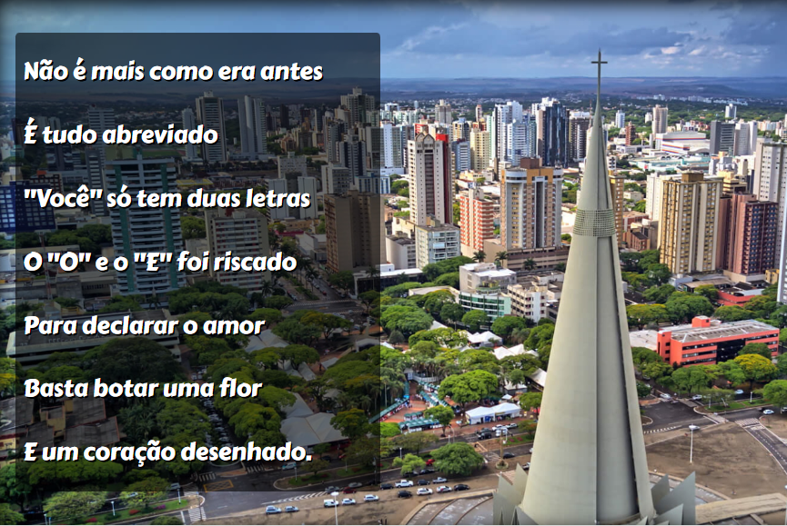

Bem - Vindo
Olá! Sou Natan Oliveira, um desenvolvedor apaixonado por transformar ideias em soluções digitais. Estou em constante evolução, focado em aprender novas tecnologias e aplicar boas práticas de desenvolvimento web. Meu objetivo é criar projetos que não apenas funcionem bem, mas que ofereçam uma ótima experiência ao usuário. Vamos construir algo incrível juntos?
Meus Projetos
Uma coleção de projetos que tenho trabalhado

Cordel
Projeto inspirado na literatura de cordel brasileira. O foco aqui foi criar uma interface elegante, totalmente responsiva e com efeitos visuais que tornam a leitura mais envolvente.

Cordel
Projeto inspirado na literatura de cordel brasileira. O foco aqui foi criar uma interface elegante, totalmente responsiva e com efeitos visuais que tornam a leitura mais envolvente.
Cordel
Projeto inspirado na literatura de cordel brasileira. O foco aqui foi criar uma interface elegante, totalmente responsiva e com efeitos visuais que tornam a leitura mais envolvente.